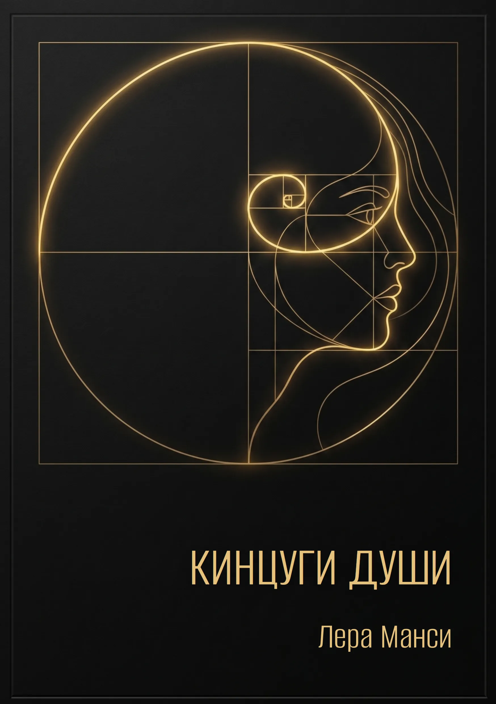

01
Название песни
0:00 / 0:00

Поэт, нейро-музыкант, создатель проекта «LeRamansi».
Здесь я соединяю свои стихи с музыкой,
чтобы каждая строка звучала.
На этом сайте — 25 стихотворений,
каждое из которых обрело мелодию.
Слушайте, читайте, чувствуйте.